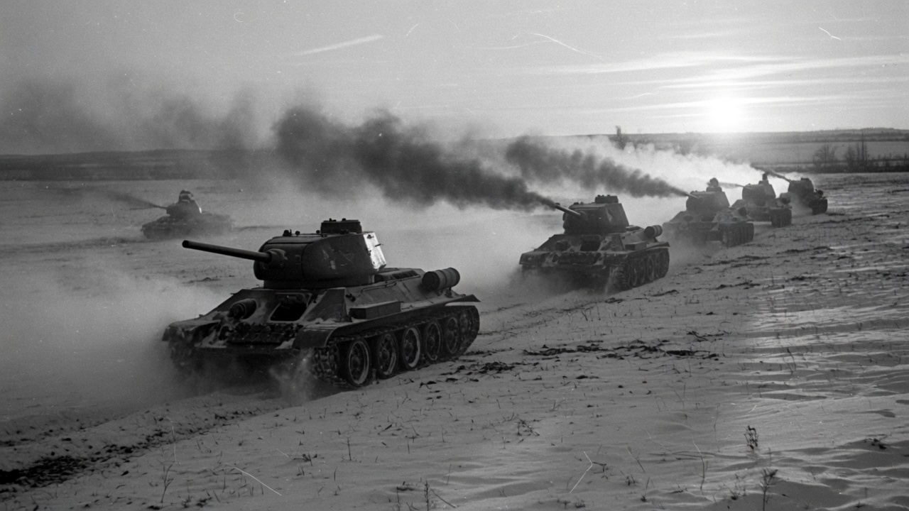
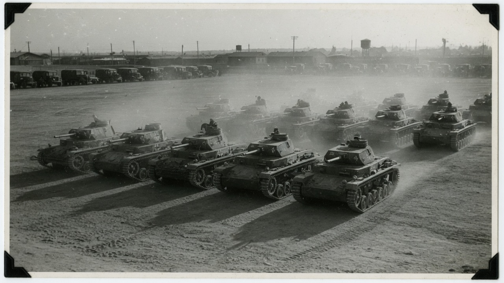

Jan Breemer · Jane’s · 1989
45 Feet
Soviet submarines from a handmade iron coffin to a football-field under the ice. The world’s largest underwater fleet, and why it so often fought the wrong war.

Anthony Tucker-Jones · 2015
Thirty-Four
The tank that was not supposed to exist. Slope, diesel, two-foot tracks — and enough of them that the zoo did not matter.

Thomas L. Jentz · 1933–1942
The Wedge
How Germany built a tank force out of agricultural tractors, secret camps in Russia, and original combat reports — then spent it in the East.

German Report Series · 1952
−63°
Former panzer commanders, writing from memory: nature as the Red Army’s ally. Mud, mercury, ski troops, and a war Hitler did not pack for.

David M. Glantz · 1991
Deep Battle
The missing layer between tactics and strategy. Tukhachevsky’s idea, the purge that killed it, the war that proved it, and the nuclear hangover after.